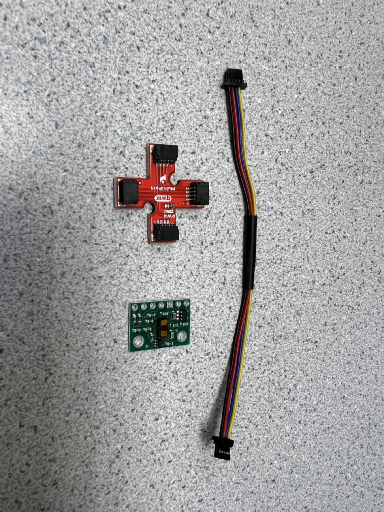

Introduction
The purpose of this lab is to get famaliar with the Time of Flight (TOF) sensors and test its functionalities and characters so that we can equip them on the robot
Parts required
- 1 x SparkFun RedBoard Artemis Nano
- 1 x USB C-to-C cable
- 2 x 4m ToF sensor
- 1 x QWICC Breakout board
- 2 x QWICC connector
- 1 x Ruler on graph paper
TOF sensor
background
A Time-of-Flight (ToF) sensor is a distance measurement device that determines the distance to an object by measuring the time it takes for a light signal to travel to the object and back. The sensor emits a short burst of light, typically from a laser or LED, which then reflects off the target object and returns to the sensor. By measuring the time taken for the light to make this round trip, and using the speed of light, the sensor calculates the distance to the object. ToF sensors are known for their accuracy, speed, and simplicity, making them ideal for a range of applications including robotics, smartphones, industrial automation, and automotive systems. In robotics, for instance, a ToF sensor helps in navigation and obstacle detection by providing precise real-time distance measurements. Their ability to deliver reliable and accurate distance data swiftly makes ToF sensors a crucial component in many modern technological applications.
Hardware connection
By the end of this lab, we will have integrated a total of three sensors—one IMU and two ToF sensors—with the Artemis board using I2C communication. The wiring diagram, illustrated below, employs a QWIIC multiport to streamline the connections. The two motors will be connected to the Artemis in the next lab. The diagram also indicates the color scheme for the I2C wiring, corresponding to the QWIIC cable colors. According to the datasheet, the default I2C address for the IMU is b110100X, with the LSB determined by the logic level on pin AD0. The default I2C address for the ToF sensor is 0x52.
Since we are using two ToF sensors simultaneously, we must manage their I2C addresses to avoid conflicts. This is achieved by utilizing the XSHUT pins on the ToF sensors. As noted in the wiring diagram, one ToF sensor's XSHUT pin is controlled by the Artemis, allowing it to be placed in Hardware Standby mode during setup. This permits us to change the I2C address of the other ToF sensor, enabling both sensors to communicate on the same I2C bus without address conflicts. Alternatively, we could connect the two ToF sensors to different I2C buses on the Artemis, eliminating the need for XSHUT pin manipulation.
Regarding sensor placement, the IMU will be mounted horizontally on either the roof or the bottom of the robot. The two ToF sensors will be positioned at the front and side of the robot, respectively. Placing the ToF sensors in different directions expands the robot's perception dimensions. However, this method may be less reliable compared to having both ToF sensors simultaneously detect the same direction and combining their readings for a more robust measurement.
Soldering
In this lab, we tested powering the Artemis with a battery instead of the USB-C port to prepare for wireless control. As illustrated in the figure below, the battery wires were soldered to the JST jumper wires. We then tested the Bluetooth connection and message transmission using code from previous labs to ensure everything functioned correctly with the new power setup.
We also connected the QWIIC cable with the ToF sensors as shown in the figure below.
We also connected two ToF sensors to the Artemis board using the QWIIC Breakout board and the quick I2C connection port on the Artemis board.
I2C connection
We used the I2C address scanning example from Examples->Apollo3->Example05_Wire_I2C to identify the I2C address of a single ToF sensor, and the result is shown below. The detected I2C address is 0x29, which differs from the 0x52 noted in the datasheet. This discrepancy arises because the Pololu breakout board configures the sensor's 7-bit slave address to 0101001b by default on power-up. These seven bits correspond to 0x29 in binary. When a 0 representing a write operation is appended at the end, it becomes 01010010, which translates to 0x52 as indicated in the sensor datasheet.
Mode selection
According to the datasheet, the ToF sensor VL53L1X offers two distance measurement modes: short-distance mode, with a maximum measurement distance of 1.3 meters and better ambient light immunity, and long-distance mode, with a maximum measurement distance of 4 meters. These modes can be manually set during setup using the functions setDistanceModeShort() and setDistanceModeLong(). To test the performance of these two modes, we configured the two ToF sensors in different modes and placed them at the same distance from obstacles. The setup for operating both sensors simultaneously will be discussed in the next section. The readings from each sensor were then compared to the actual distance. The figures below show the sensors positioned on a table facing the ground, with the table's height being approximately 100.6 cm. The resulting readings from both sensors are also displayed, demonstrating their performance in short-distance and long-distance modes.
void loop(void) { distanceSensor1.startRanging(); //Write configuration bytes to initiate measurement distanceSensor2.startRanging(); while (!distanceSensor1.checkForDataReady()) { delay(1); } int distance1 = distanceSensor1.getDistance(); //Get the result of the measurement from the sensor distanceSensor1.clearInterrupt(); distanceSensor1.stopRanging(); Serial.print("Distance1(mm): "); Serial.print(distance1); while (!distanceSensor2.checkForDataReady()) { delay(1); } int distance2 = distanceSensor2.getDistance(); //Get the result of the measurement from the sensor distanceSensor2.clearInterrupt(); distanceSensor2.stopRanging(); Serial.print("\tDistance2(mm): "); Serial.print(distance2); Serial.println(); }

Utilizing a similar setup, but with varying distances between the sensors and the obstacle, and averaging the results of 100 readings, a comprehensive dataset of distance measurements in both short and long-distance modes was compiled. Upon analysis, it was observed that the errors for both modes remained relatively insignificant within the 1.3-meter range. Given the uncertainty surrounding the primary operational environment and tasks the robot will encounter in future labs, a definitive choice regarding the sensor ranging mode has not yet been made. Should the robot predominantly navigate through open spaces, the long-distance mode would likely offer greater suitability. Conversely, if the robot is expected to maneuver through confined or narrow areas, the short-distance mode would be the preferable option. The final decision will be contingent upon the specific operational requirements and environmental characteristics encountered during the robot's missions.
two ToF sensors
To address the challenge posed by the shared initial I2C address of the two ToF sensors required for this lab, the following code was implemented. Initially, the XSHUT pin of one ToF sensor is set to low, placing it into Hardware Standby mode. Subsequently, the I2C address of the other ToF sensor is altered to 0x30. Finally, the XSHUT pin is set to high, enabling both ToF sensors to operate concurrently on the same I2C bus while utilizing distinct addresses. This strategy ensures seamless integration and operation of the two sensors in parallel, allowing for efficient data collection and analysis in the lab environment.
#define SHUTDOWN_PIN 8 SFEVL53L1X distanceSensor1; SFEVL53L1X distanceSensor2; void setup(void) { Wire.begin(); Serial.begin(115200); Serial.println("VL53L1X Qwiic Test"); pinMode(SHUTDOWN_PIN, OUTPUT); digitalWrite(SHUTDOWN_PIN, LOW); distanceSensor2.setI2CAddress(0x30); digitalWrite(SHUTDOWN_PIN, HIGH); if (distanceSensor1.begin() != 0) //Begin returns 0 on a good init { Serial.println("Sensor1 failed to begin. Please check wiring. Freezing..."); while (1) ; } if (distanceSensor2.begin() != 0) //Begin returns 0 on a good init { Serial.println("Sensor2 failed to begin. Please check wiring. Freezing..."); while (1) ; } distanceSensor2.setI2CAddress(0x30); Serial.println("Sensor2 online!"); digitalWrite(SHUTDOWN_PIN, HIGH); Serial.println("Sensor1 online!"); distanceSensor1.setDistanceModeLong(); distanceSensor2.setDistanceModeShort(); }
Sensor Speed
To assess the upper limit of the code's loop execution speed, the TOF code underwent simplification. Instead of initiating, clearing interrupts, and halting ranging in each loop iteration, the code now only begins ranging in the setup phase. While this adjustment may result in slightly less precise sensor readings, practical testing revealed the impact to be acceptable. Each loop iteration now takes approximately 9 to 10 milliseconds to complete. Although this duration includes time allocated for Serial printing, it is evident that the I2C communication between the Artemis and the sensor remains the primary limiting factor in speed.
ToF Data Transmission via BLE
The functionality of transmitting TOF data via BLE was successfully tested. Upon reception, the data was parsed on the Python end and plotted using matplotlib for future analysis. A pseudo code snippet illustrating this process is provided below. As in Lab 2, upon receiving the START_RECORD command, data from the two TOF sensors, along with their respective timestamps, begins to be stored in arrays. Subsequently, these stored values can be transmitted via BLE using the GET_RECORDED_DISTANCES command. This methodology allows for seamless data acquisition and transfer, facilitating comprehensive analysis and insights into the performance of the TOF sensors.
On the Python end, a notification handler is defined to receive the published BLE messages and parse the data into arrays, as shown in the following picture.

The received data from the two ToF sensors is depicted in the figure below. In this measurement scenario, the two sensors are positioned parallel to each other, approaching an obstacle. The data captured in short-distance mode exhibits larger disturbances, which may be attributed to potential human measuring errors. These fluctuations could arise from variations in sensor placement or slight discrepancies in the measurement setup. Despite these challenges, the data provides valuable insights into the performance of the sensors and their ability to accurately detect obstacles in close proximity.
Sensor Comparison
Different types of distance sensors offer unique advantages and disadvantages based on factors such as measurement range, accuracy, cost, and environmental conditions. Ultrasonic sensors, for instance, provide long-range detection and wide-angle coverage, making them suitable for applications like object detection and obstacle avoidance. However, their accuracy diminishes with distance, and they can be affected by environmental factors like temperature and humidity. Infrared (IR) sensors, on the other hand, are compact, low-cost, and ideal for indoor use, but they have limited range and can be influenced by ambient light conditions. Time-of-Flight (ToF) sensors offer high accuracy, fast response times, and a wide measurement range, but they tend to be more expensive and may require calibration. Laser distance sensors excel in precision and long-range measurements, but they come with higher costs and safety concerns due to the powerful laser beams they emit. Choosing the most suitable sensor depends on factors like the specific application requirements, budget, and environmental considerations.
ToF Sensitivity to Colors and Textures
To evaluate the sensitivity and measurement accuracy of the TOF sensor to obstacles of varying colors and textures, we conducted tests using five different obstacles. The results, depicted in the figure below, represent the average of one hundred readings for each test. Surprisingly, there were no significant differences observed in the readings across different obstacle types, suggesting that the TOF sensor may not be particularly sensitive to color and texture variations. However, it's important to note that this conclusion is preliminary, as the limited variety of test samples used in the experiment may have influenced the results. Further investigation with a wider range of obstacle materials and textures is warranted to confirm these findings.

Conclusion
This lab has prompted me to reflect on the inherent limitations of our robots' visual perception capabilities. Even with the incorporation of two ToF sensors, our robots may still face challenges in fully comprehending their surroundings. They will likely need to dedicate considerable time to scanning objects within their vicinity, potentially through rotational movements, in order to gather comprehensive distance information. By employing such scanning techniques, we can accumulate data points that could be utilized to construct a map within the robot's memory. This map could serve as a foundational tool for various navigation tasks, allowing the robot to autonomously navigate towards specific objectives or destinations with greater precision and efficiency. However, it's crucial to acknowledge that while mapping and navigation based on environmental scanning hold promise, they also present complex technical and computational challenges that require careful consideration and implementation. Nonetheless, advancing our understanding and utilization of such techniques could significantly enhance the autonomy and functionality of our robotic systems in diverse real-world scenarios.